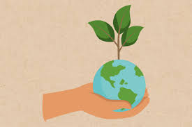

Transformando nuestro entorno
Educación para el Reciclaje y Cuidado Comunitario
¿Por qué es importante reciclar?
El reciclaje es fundamental para conservar nuestros recursos naturales y reducir la contaminación. Al reciclar, disminuimos la cantidad de residuos que terminan en vertederos o en la naturaleza, evitando daños irreversibles al medio ambiente y la salud humana.
Objetivos de la educación ambiental
- Promover hábitos responsables de consumo y desecho.
- Fomentar la separación adecuada de residuos.
- Estimular la participación activa en actividades comunitarias.
- Generar conciencia sobre la protección del entorno natural.
- Incentivar la reutilización y reducción de materiales.

Consejos prácticos para reciclar en casa
- Separa tus residuos: papel, cartón, plástico, vidrio y orgánicos.
- Limpia los envases reciclables antes de desecharlos.
- Reutiliza bolsas, frascos y otros materiales para darles una segunda vida.
- Evita el uso de plásticos de un solo uso y opta por materiales biodegradables.
- Participa en campañas y eventos de limpieza comunitaria.
Cómo cuidar nuestra comunidad
Más allá del reciclaje, el cuidado comunitario implica mantener limpios los espacios públicos, respetar las normas locales y fomentar una cultura de respeto y colaboración entre vecinos para lograr un entorno saludable y armonioso para todos.